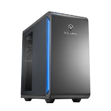
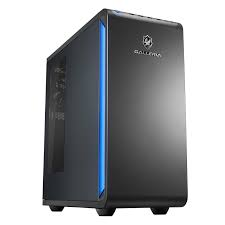
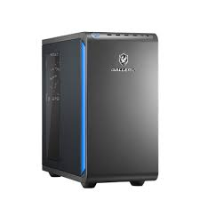

ゲーミングPCの選び方：見るべきポイント
ゲーミングPCを選ぶ際に必ずチェックすべきは、CPU・GPU・メモリ・SSD容量です。また、高スペックを狙うなら消費電力も確認しましょう。
しょーでんのように頻繁に持ち運ぶ必要がある方には「ゲーミングノート」がおすすめですが、選ぶ基準はデスクトップと大きく変わりません。ただし、ノートPCで特筆して見るべきは、「SSDやメモリの交換・増設が可能かどうか」です。
最近のノートPCには、メモリが基板に直付けされていて増設できないモデルもあります。「安かったから」と増設不可のモデルを買ってしまうと、後で性能不足を感じた時に買い替えるしかなくなってしまいます。
妥協しても後悔が薄い部分・妥協できない部分
【デスクトップの場合】
デスクトップはパーツの交換が容易なため、幅広く妥協しても後からアップグレードすれば大きな失敗にはなりません。しかし、過度な妥協は危険です。
例えば、Intel CPUであれば「LGA1700」より古いマザーボードを選んでしまうと、次回のアップグレード時にマザーボードごと交換が必要になります。その場合、Windows OSの再購入が必要になることもあり、結局PCを1台買い替えるのと同じくらい費用がかかる場合があります。
【ノートPCの場合】
ノートPCにおいて、CPUとGPUは絶対に妥協しないでください。これらは後から交換が不可能です。逆に、メモリやSSDは「後から増設可能なモデル」を選んでおけば、最初は低めのスペックで妥協しても後悔しません。実は、この点さえ理解していれば、ノートPCの方が選び方はシンプルです。
注意点：ノートPCはバッテリー駆動や発熱を抑えるために電力が制限されています。同じ世代のCPU/GPUでも、デスクトップ版より性能は劣るというデメリットは理解しておきましょう。

用途別おすすめスペック 3つのパターン
1. フルHD/60FPSで快適にプレイしたい
とにかくゲームができればいい、4K編集などは予定していない方向けのバランス重視構成です。
| CPU | Intel Core i7-14700 または同等 |
|---|---|
| GPU | RTX 5060Ti |
| メモリ | DDR4 または DDR5 32GB |
| SSD | 1TB |
RTX 5060Tiなら、大抵のゲームをフルHD環境でヌルヌルと快適に楽しめます。
2. ライブ配信や4Kプレイを目指したい
ゲームをしながらOBSやブラウザを動かしたいストリーマー向け構成です。
| CPU | Intel Core i7-14700K または同等 |
|---|---|
| GPU | RTX 5080 |
| メモリ | DDR5 32GB以上 |
| SSD | M.2 SSD 2TB |
「K付き」モデルはオーバークロック対応で高いパフォーマンスを発揮します。M.2 SSDはSATA接続よりも圧倒的に速く、配信中の高負荷状態でも安定します。
3. 一切の妥協を許さないガチ勢向け
2026年現時点で考えうる最高峰のスペックです。
| CPU | Core i9-14900K |
|---|---|
| GPU | RTX 5090 |
| メモリ | DDR5 64GB以上 |
| SSD | M.2 SSD 4TB |
具体的デスクトップおすすめ3選 モデル紹介



しょーでんおすすめノートPC 2選
ノートPCなら、しょーでんはガレリア一択をおすすめします。拡張性が高く、長く使えるからです。

GALLERIA RL7C-R56-5N
- CPU: Core i7-14650HX
- GPU: RTX 5060 8GB (Laptop)
- メモリ: DDR5 16GB (増設可)
- SSD: 500GB M.2 (増設可)
解説：スペックのバランスが良く、大きなボトルネックがありません。メモリとSSDを増設して使うのが最高に快適でおすすめです。
楽天市場で購入
GALLERIA RL7C-R35-5N
- CPU: Core i7-13620H
- GPU: RTX 3050 6GB (Laptop)
- メモリ: DDR5 16GB
- SSD: 500GB M.2
解説：手頃な価格でPCゲームを始めたい方向け。GPUが少し弱めなので重すぎるゲームは注意が必要ですが、それ以外ならサクサク動作します。
楽天市場で購入「超高性能」を追求し、一切の妥協をしたくないガチ勢の方は、必ずデスクトップを選んでください。
まとめ
用途によって必要な性能は変わります。自分のやりたいことに合わせてスペックを選びましょう。
- ポイント1： CPUとGPUのバランスを見て、ボトルネックになりにくい構成を選ぶ。
- ポイント2： ノートならCPU・GPU性能は妥協せず、メモリ・SSDを増設可能なものを選ぶ。
自分のスタイルに合った最高の相棒を見つけてください！